| CG010 | General Knowledge | 2 | high | If you intend to turn left, are you required to give a signal? | 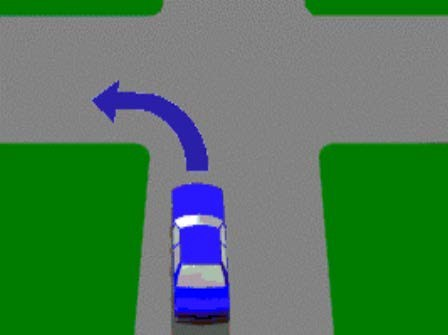 |
| CG013 | General Knowledge | 3 | high | What is meant by this sign on or near a bridge? | 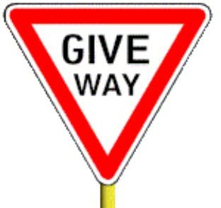 |
| CG014 | General Knowledge | 3 | high | When reversing, you should - | 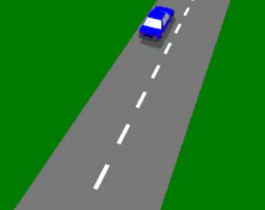 |
| CG028 | General Knowledge | 4 | high | Are you permitted to park in the direction of the arrow? | 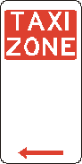 |
| CG031 | General Knowledge | 5 | high | You are driving in a 60 km/h zone, with only one lane for traffic in your direction. You see a bus ahead (with this sign displayed on the rear) signalling its intention to pull out from a bus stop, you should - | 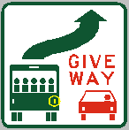 |
| CG037 | General Knowledge | 6 | high | When can a private car travel in a lane marked by this sign? | 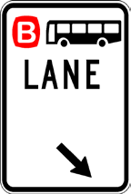 |
| CG045 | General Knowledge | 7 | high | If your vehicle is involved in an accident (regardless of the damage), what details must you give, to the other driver(s), if asked? | |
| CG046 | General Knowledge | 8 | high | If a vehicle you are driving is involved in an accident and a person is injured, what must you do after stopping? | 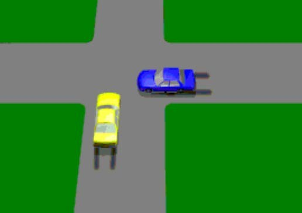 |
| CG070 | General Knowledge | 11 | high | You hold an unrestricted licence and are driving at 100 km/h in the country and pass this sign. What should you do? | 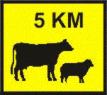 |
| CG071 | General Knowledge | 11 | high | You are turning right from one of two right turn only lanes. How should you use your indicators? | 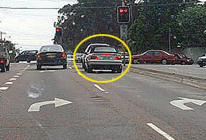 |
| CG078 | General Knowledge | 12 | high | You want to leave your automatic car parked on a street sloping uphill. You should - | 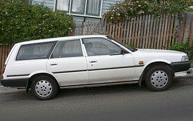 |
| CG080 | General Knowledge | 12 | high | You have just passed this sign. Can you park on this road ? |  |
| CG082 | General Knowledge | 12 | high | Where there are double dividing lines, you may park - | 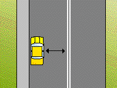 |
| CG083 | General Knowledge | 12 | high | If there are no signs or markings to advise you, can you choose any of these methods of parking? | 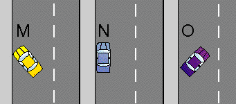 |
| CG084 | General Knowledge | 13 | high | You should angle park - |  |
| CG086 | General Knowledge | 13 | high | This bridge has only just enough room for two vehicles. As you come close to it you should - | 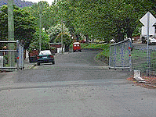 |
| CG087 | General Knowledge | 13 | high | Which side mirror is adjusted best? | 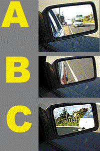 |
| CG088 | General Knowledge | 14 | high | You should be particularly careful at this intersection because - | 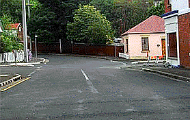 |
| CG090 | General Knowledge | 14 | high | You hear the siren of an ambulance approaching you from behind. You should - | 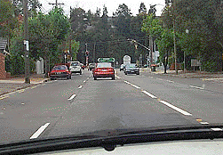 |
| CG091 | General Knowledge | 15 | high | You are driving along this road. You hear an ambulance's siren and see the ambulance in your mirror. You should - | 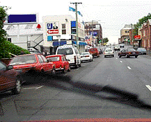 |
| CG092 | General Knowledge | 15 | high | You are about to make a right hand turn at this intersection. You have the green light. You hear a siren and then see that a fire truck will soon overtake you. You should - | 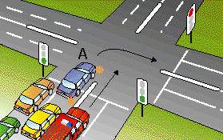 |
| CG093 | General Knowledge | 15 | high | When you come across roadworks - | 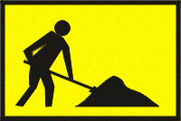 |
| CG095 | General Knowledge | 16 | high | You are approaching a green light in vehicle A. An ambulance sounding its siren is approaching the same intersection and has a red light. You should - | 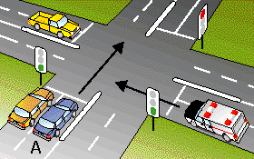 |
| CG099 | General Knowledge | 16 | high | When you see these lights flashing on the back of a bus, what should you do? | 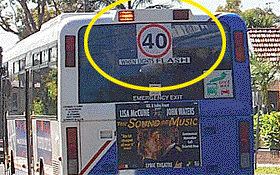 |
| CG100 | General Knowledge | 16 | high | You are driving at night and there is no other traffic around you. When can you use your headlights on high beam? | 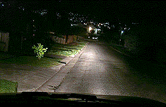 |
| CG102 | General Knowledge | 16 | high | You want to park your vehicle for a short time. It is night time. You should - | 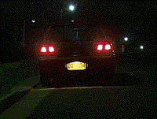 |
| CG103 | General Knowledge | 17 | high | You drive up to a corner where you see some loose gravel on the road. You should - |  |
| CG105 | General Knowledge | 17 | high | When you are driving on a two-lane freeway, which lane should you choose? | 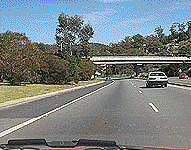 |
| CG112 | General Knowledge | 18 | high | You are driving your vehicle along a street and want to stop for a short time. Are you allowed to double park your vehicle (that is stand it on the road alongside a parked car)? | 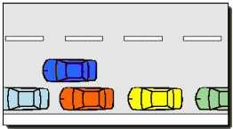 |
| CG113 | General Knowledge | 18 | high | Looking at the diagrams, how far from the approach side of a bus stop or a railway crossing are you allowed to stand or park your vehicle? |  |
| CG119 | General Knowledge | 20 | high | If you are driving through a road work zone in the left hand lane and you see this sign you should - | 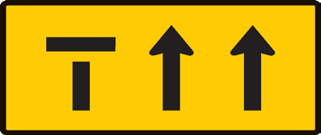 |
| CG120 | General Knowledge | 20 | unmapped | Where must L or P plates be displayed on a vehicle - | |
| FD028 | Fatigue and Defensive Driving | 28 | high | You are about to move away from the kerb in your car. What is the last thing you should do before you move into traffic? | 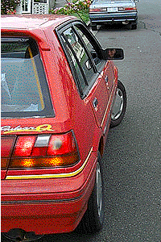 |
| FD033 | Fatigue and Defensive Driving | 29 | high | If you are a new driver and first start to drive at night you should - | 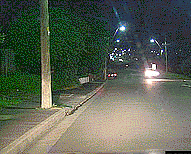 |
| FD037 | Fatigue and Defensive Driving | 30 | high | You should leave a gap between your vehicle and the one you are following. In good conditions the gap should be - | 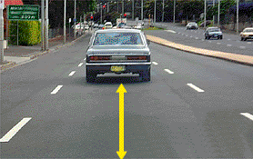 |
| IN003 | Intersections | 31 | high | When making a right-hand turn at the intersection shown, you must give way to - | 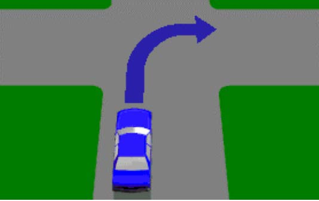 |
| IN004 | Intersections | 31 | high | If turning right at a T-intersection (as shown) must you give way to vehicles approaching from both the left and right? | 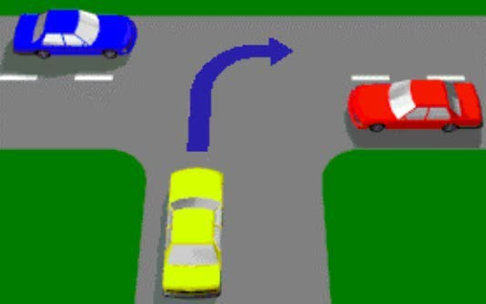 |
| IN005 | Intersections | 31 | unmapped | If a STOP or GIVE WAY sign has been knocked down, for example, as the result of an accident, does the line marked across the road have any meaning? | |
| IN006 | Intersections | 32 | high | If turning at an intersection are you required to give way to pedestrians? | 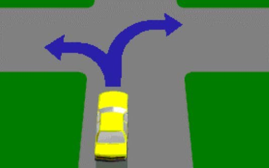 |
| IN007 | Intersections | 32 | high | When you come to an intersection and the road beyond is choked with vehicles going in the same direction, what should you do? | 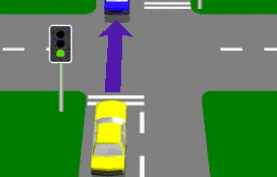 |
| IN008 | Intersections | 32 | unmapped | Right-turns must be made from which lanes when travelling on a laned roadway? | |
| IN010 | Intersections | 33 | high | In this diagram both vehicles O and P must pass through GIVE WAY signs before entering the intersection. Which vehicle goes first? | 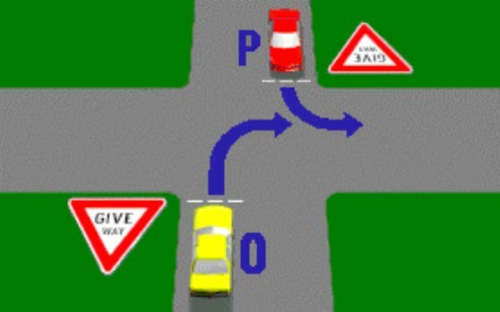 |
| IN011 | Intersections | 33 | high | Vehicle O is at a STOP sign - | 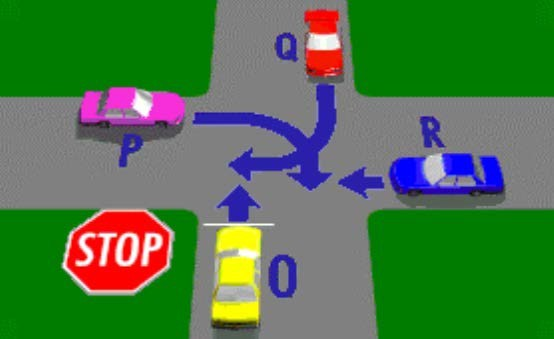 |
| IN012 | Intersections | 33 | high | If both vehicles P and O in the diagram are turning right, which vehicle is in the best position to turn left into the street marked 'X'? |  |
| IN013 | Intersections | 33 | high | The diagram shows a marked pedestrian crossing at an intersection. There is also a STOP sign at the intersection. You have already stopped for a pedestrian. Must you stop again at the STOP line? | 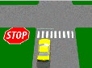 |
| IN014 | Intersections | 34 | high | A GIVE WAY sign at an intersection means that you must - | 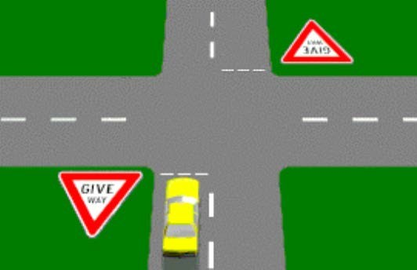 |
| IN016 | Intersections | 34 | high | Which vehicle in the diagram must give way? | 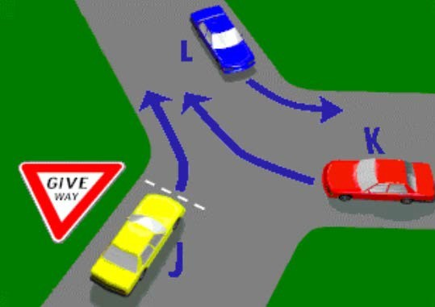 |
| IN019 | Intersections | 34 | high | At the T-intersection shown in the diagram which vehicle should give way? |  |
| IN020 | Intersections | 35 | unmapped | You wish to make a right-hand turn from a ONE WAY STREET with no arrows marked on the roadway. You should position your vehicle - | |
| IN023 | Intersections | 35 | unmapped | When there are no arrows marked on the road, left turns must be made from - | |
| IN026 | Intersections | 35 | high | What should you do on approaching a railway level crossing displaying a STOP sign? | |
| IN027 | Intersections | 36 | high | You are driving the car in the diagram. You must stop - | 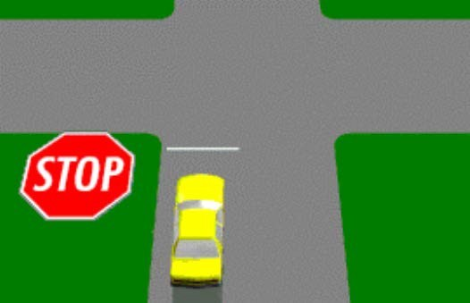 |
| IN028 | Intersections | 36 | unmapped | If the boomgates are down and the signals are flashing, at a railway level crossing, you may begin to cross - | |
| IN029 | Intersections | 36 | high | When approaching a railway level crossing displaying this sign, you must - | 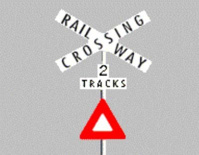 |
| IN030 | Intersections | 37 | high | Even if the signal at a railway level crossing does not indicate that a train is coming, you should - | 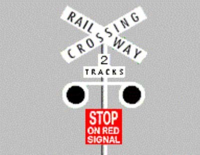 |
| IN034 | Intersections | 37 | high | You come to an intersection in Sydney with a Light Rail vehicle about to enter. What should you do? | 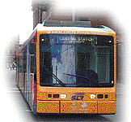 |
| IN035 | Intersections | 37 | high | You approach an intersection in busy traffic and want to go straight ahead. The traffic lights turn green. When are you permitted to enter the intersection? | 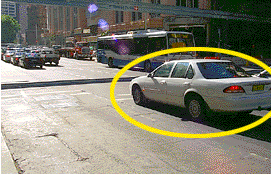 |
| IN037 | Intersections | 38 | high | You are at a busy intersection with slow moving traffic and want to go straight ahead. When the traffic lights change to green you should make sure that - |  |
| IN038 | Intersections | 38 | high | The traffic on the other side of this intersection has stopped. You are in the car shown and want to cross the intersection. The lights are green. What should you do? | 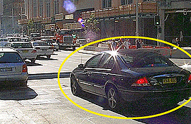 |
| IN040 | Intersections | 39 | high | As you drive into an intersection, the lights turn to yellow. You should - | 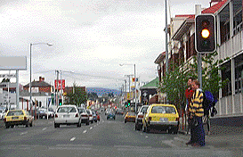 |
| IN042 | Intersections | 39 | high | When these lights are flashing it means - | 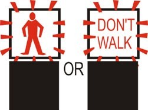 |
| IN043 | Intersections | 39 | high | You wish to turn left here. The pedestrian lights are flashing red. You should - | 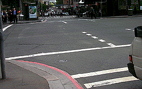 |
| IN044 | Intersections | 40 | high | You drive up to an intersection with a stop sign. There is no painted stop line. Where should you stop? | 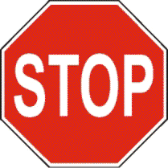 |
| IN045 | Intersections | 40 | high | You drive up to an intersection with a stop sign in the car marked A and you wish to turn right. The car marked B facing you also has a stop sign and is indicating to turn left. Who can go first? |  |
| IN046 | Intersections | 40 | high | This intersection does not have any traffic lights or signs. You are in car A and want to turn right. When can you go? | 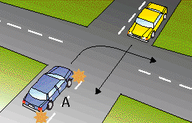 |
| IN048 | Intersections | 41 | high | At this intersection there are no signs or traffic lights. You are in the car marked A. You want to turn left. What should you do? | 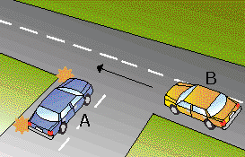 |
| IN049 | Intersections | 41 | high | You are in car A and want to turn right at this intersection. Car B facing you is also indicating to turn right. What path should you take? | |
| IN053 | Intersections | 41 | high | You are in car A and are going straight ahead through the intersection. Who should give way? | |
| IN056 | Intersections | 42 | high | You wish to turn left at this roundabout. Which lane may you use? | |
| IN057 | Intersections | 42 | high | You are in the right hand lane and are planning to go straight ahead through this roundabout. When should you signal left to exit the roundabout? | |
| IN058 | Intersections | 42 | high | When you wish to turn left at a roundabout you indicate - | |
| IN059 | Intersections | 43 | high | You wish to go straight ahead at this roundabout. Which statement is true? | |
| IN060 | Intersections | 43 | high | You want to turn left at this roundabout. Which lane must you use? | |
| IN061 | Intersections | 43 | high | When you wish to drive straight ahead at a roundabout you may enter from either the left or right lane. As you continue around you should - | |
| IN062 | Intersections | 44 | high | When turning left at a roundabout you should enter and leave the roundabout - | |
| IN063 | Intersections | 44 | high | You wish to go straight ahead on this roundabout with two lanes. Which lane may you use? | |
| IN064 | Intersections | 44 | high | The motorcyclist wants to travel straight ahead through this roundabout. The rider should watch out for the marked car because the car - |  |
| IN065 | Intersections | 44 | high | To turn back into the same road from which you joined this roundabout you must - | |
| IN066 | Intersections | 45 | high | In this roundabout with two lanes, can the marked car turn right? | |
| IN067 | Intersections | 45 | high | The red car wants to turn right and exit the roundabout in the street indicated by an arrow. Is the car positioned in the correct lane to do this? | |
| LD002 | Traffic Lights / Lanes | 46 | high | Which movements shown in the diagram can legally be made by the driver of the purple car? | |
| LD003 | Traffic Lights / Lanes | 46 | high | Which movements shown in the diagram can legally be made by the driver of the purple car? | |
| LD004 | Traffic Lights / Lanes | 46 | high | Which movements shown in the diagram can legally be made by the driver of the purple car? | |
| LD007 | Traffic Lights / Lanes | 47 | high | A section of road is marked with double unbroken dividing lines as in the diagram. When is a vehicle allowed to cross these lines? | |
| LD009 | Traffic Lights / Lanes | 47 | high | When driving in traffic lanes (as shown in the diagram), you may change your lane - | |
| LD010 | Traffic Lights / Lanes | 48 | high | When two lanes merge into one (as shown in the diagram), who should give way? | |
| LD011 | Traffic Lights / Lanes | 48 | high | Looking at the diagram, which vehicle must give way? | |
| LD015 | Traffic Lights / Lanes | 49 | high | You are in car marked A. You wish to overtake car marked B. You should - | |
| LD017 | Traffic Lights / Lanes | 49 | high | When the road is marked this way are you permitted to cross the lines and overtake? | |
| LD018 | Traffic Lights / Lanes | 49 | high | When starting to overtake you see the dividing lines ahead change to double unbroken lines. What should you do? | |
| LD022 | Traffic Lights / Lanes | 50 | high | You want to turn left at this intersection. There is an edge line that continues through the intersection. Are you permitted to turn here? | |
| LD025 | Traffic Lights / Lanes | 50 | high | RUH Before changing lanes you should - | |
| LD026 | Traffic Lights / Lanes | 51 | high | You drive into a transit lane where the T2 rule applies. You have one passenger plus yourself. Are you permitted to remain in the transit lane? | |
| LD027 | Traffic Lights / Lanes | 51 | high | You change lanes and then see you are in a lane where the T3 rule applies. There is no other traffic in this lane. You have one passenger. What should you do? | |
| LD028 | Traffic Lights / Lanes | 51 | high | You are approaching the start of a T2 transit lane. You are the only person in the car. You want to turn left at the next intersection 200 metres away. Can you travel in the transit lane at this point? | |
| LD029 | Traffic Lights / Lanes | 52 | high | You are in car marked Y and want to turn right using a median turning lane. A car marked O, coming towards you, is already in the median lane; it is slowing down and indicating. Are you permitted to enter and share the median turning lane? | |
| LD032 | Traffic Lights / Lanes | 52 | high | You are driving a car and want to pick up a passenger. The lane you want to stop in is a BUS LANE. Are you permitted to stop there? | |
| LD033 | Traffic Lights / Lanes | 52 | unmapped | What does this sign mean? | |
| LD038 | Traffic Lights / Lanes | 52 | high | You are going to turn right from a one-way street. Where should you be when you start your turn? | |
| ND005 | Negligent Driving | 54 | unmapped | You are approaching the crest (top of a hill) on a narrow road, the safest procedure is to - | |
| ND007 | Negligent Driving | 54 | high | On a single laned road (as shown), you must always overtake another vehicle on its right except when - | |
| ND015 | Negligent Driving | 56 | high | RUH You are driving behind a long vehicle (as shown) which has a sign saying DO NOT OVERTAKE TURNING VEHICLE. The long vehicle indicates that it is going to turn left. You - | |
| ND019 | Negligent Driving | 56 | high | How should you overtake a pedal cyclist? | |
| ND020 | Negligent Driving | 57 | high | If an overtaking vehicle signals that it must move in, in front of you, you should - | |
| ND031 | Negligent Driving | 57 | high | You are travelling in the left lane and wish to turn right at the intersection. You move to the right lane and a driver behind sounds their horn at you. What have you done wrong? | |
| ND032 | Negligent Driving | 58 | high | What is this driver doing that is negligent and illegal? | |
| ND033 | Negligent Driving | 58 | high | The speed limit on this road is 90 km/h. You have just overtaken a vehicle in the left lane. What should you do next? |  |
| ND034 | Negligent Driving | 58 | high | RUH The speed limit on this road is 100 km/h. When can you use the right lane? | |
| ND044 | Negligent Driving | 59 | high | When you have started to overtake the car, you notice that its right indicator is flashing. You should - | |
| PD001 | Pedestrians | 61 | unmapped | You must give way to pedestrians on a marked pedestrian crossing - | |
| PD002 | Pedestrians | 61 | high | When approaching a marked pedestrian crossing and no pedestrians are in sight, you should - | |
| PD004 | Pedestrians | 61 | high | Which sign painted on the road tells you there is a pedestrian crossing ahead? | |
| PD005 | Pedestrians | 62 | high | A vehicle ahead of you has stopped at a pedestrian crossing. You - | |
| PD006 | Pedestrians | 62 | high | If you see a School Crossing Supervisor holding a sign like this, you must wait until the children - | |
| PD015 | Pedestrians | 64 | high | At a pedestrian crossing with traffic lights, when the amber light starts 'flashing' after the red stop signal, it means - | |
| PD016 | Pedestrians | 64 | high | Which statement is true? | |
| PD017 | Pedestrians | 64 | high | You drive towards these people on the road. What should you do? | |
| PD018 | Pedestrians | 65 | high | You see these zig-zag markings on the road in front of you. What do they mean? | |
| PD019 | Pedestrians | 65 | high | These markings on the road indicate - | |
| PD021 | Pedestrians | 65 | high | You approach a person crossing the road. You should - | |
| PD022 | Pedestrians | 66 | high | You approach a crossing and see the scene in the picture. You should - | |
| PD024 | Pedestrians | 66 | high | This person is standing on a pedestrian refuge. If he steps out onto your lane you should - | |
| PD025 | Pedestrians | 66 | high | Which of the following statements is correct? | |
| PD026 | Pedestrians | 67 | high | When you see children on or near the road - | |
| PD027 | Pedestrians | 67 | high | When you see older people on or near the road, you should - | |
| PD030 | Pedestrians | 68 | high | You drive up to a Light Rail vehicle that has just stopped at a tram stop. What is the most important thing you should do? |  |
| SB003 | Seat Belts / Restraints | 69 | high | The adult passenger in the rear is breaking the law because she is - | |
| SB019 | Seat Belts / Restraints | 71 | high | You want to fit a baby restraint to your car. What should you secure the restraint to? | |
| SL021 | Speed Limits | 72 | high | You are driving in busy traffic in an 80 km/h zone. It begins to rain lightly. What should you do? |  |
| SL022 | Speed Limits | 72 | high | You are driving in a 70 km/h zone, keeping to the limit. Several vehicles pass you. One of your passengers suggests you should keep up with the other traffic. What should you do? | |
| SL023 | Speed Limits | 72 | high | You are driving in busy traffic in a 60 km/h zone. You feel 60 km/h is a bit too fast for the conditions. What should you do? | |
| SL030 | Speed Limits | 73 | high | When you see this sign you must - | |
| SL031 | Speed Limits | 73 | high | This sign means you must - | |
| SL032 | Speed Limits | 74 | high | It is 9.20am on a school day. You are driving at 60 km/h, the same speed as traffic around you. You pass this sign but the other cars do not slow down much. What should you do? | |
| SL034 | Speed Limits | 74 | high | Speed limit signs (such as the one shown) tell drivers - | |
| TL001 | Traffic Lights / Lanes | 76 | high | You are facing traffic lights (as shown). What do they mean? | |
| TL002 | Traffic Lights / Lanes | 76 | high | At traffic lights what is meant when a red light appears? |  |
| TL003 | Traffic Lights / Lanes | 76 | high | What should you do when approaching traffic lights which change from green to yellow? | |
| TL004 | Traffic Lights / Lanes | 77 | high | What may you do at an intersection with traffic lights at which this sign is displayed? | |
| TL006 | Traffic Lights / Lanes | 77 | high | These lights mean that you - | |
| TL007 | Traffic Lights / Lanes | 77 | high | This light means, you - | |
| TL008 | Traffic Lights / Lanes | 78 | high | It is 3 o'clock in the morning. You cannot see any other traffic. You want to turn right. You may - | |
| TL010 | Traffic Lights / Lanes | 78 | high | As you approach an intersection with traffic lights, the yellow light turns to red. You must - | |
| TL011 | Traffic Lights / Lanes | 78 | high | You approach an intersection showing a red light and the sign shown. You wish to turn left. You must - | |
| TL013 | Traffic Lights / Lanes | 79 | high | You are waiting at an intersection and the lights are red. The traffic lights change to green. You should - | |
| TL014 | Traffic Lights / Lanes | 79 | high | You want to turn right at an intersection and see this traffic light. You should - |  |
| TL015 | Traffic Lights / Lanes | 79 | high | You wish to turn left at this intersection. The traffic lights are red and you see this sign. You should - | |
| TL016 | Traffic Lights / Lanes | 79 | high | You wish to turn left at this intersection and the traffic lights are green. What should you do? | |
| TL017 | Traffic Lights / Lanes | 80 | high | As you approach a set of traffic lights at an intersection, they change from green to yellow (amber). You must - | |
| TL018 | Traffic Lights / Lanes | 80 | high | Temporary traffic lights at road works - | |
| TL019 | Traffic Lights / Lanes | 80 | high | Where do you stop at temporary traffic lights? |  |
| SI001 | Traffic Signs | 81 | high | When you see this sign you should - | |
| SI002 | Traffic Signs | 81 | high | This sign means you should - | |
| SI003 | Traffic Signs | 81 | high | What does this sign mean? | |
| SI004 | Traffic Signs | 82 | high | What does this sign mean? | |
| SI006 | Traffic Signs | 82 | high | What does this sign mean? | |
| SI007 | Traffic Signs | 82 | high | What does this sign mean? | |
| SI008 | Traffic Signs | 82 | high | What does this sign mean? | |
| SI009 | Traffic Signs | 83 | high | What does this sign mean? | |
| SI013 | Traffic Signs | 83 | high | What does this sign mean? | |
| SI014 | Traffic Signs | 83 | high | What does this sign mean? | |
| SI016 | Traffic Signs | 83 | high | What does this sign mean? | |
| SI017 | Traffic Signs | 84 | high | What does this sign mean? | |
| SI018 | Traffic Signs | 84 | high | When you see this sign you - | |
| SI019 | Traffic Signs | 84 | high | You are most likely to find this sign - | |
| SI020 | Traffic Signs | 84 | high | What does this sign mean? | |
| SI021 | Traffic Signs | 85 | high | You are most likely to find this sign - | |
| SI022 | Traffic Signs | 85 | high | What does this sign mean? | |
| SI024 | Traffic Signs | 85 | high | What does this sign mean? | |
| SI025 | Traffic Signs | 86 | high | You are most likely to find this sign, where - | |
| SI026 | Traffic Signs | 86 | high | What does this sign mean? | |
| SI027 | Traffic Signs | 86 | high | If the red lights on this sign are flashing what are you required to do? | |
| SI028 | Traffic Signs | 87 | high | You should expect this sign, if - | |
| SI030 | Traffic Signs | 87 | high | What does this sign mean? | |
| SI031 | Traffic Signs | 87 | high | What does this sign mean? | |
| SI032 | Traffic Signs | 87 | high | What does this sign mean? | |
| SI033 | Traffic Signs | 88 | high | You should expect this sign - | |
| SI035 | Traffic Signs | 88 | high | What does this sign mean? | |
| SI036 | Traffic Signs | 88 | high | What does this sign mean? | |
| SI038 | Traffic Signs | 89 | high | What does this sign mean? | |
| SI039 | Traffic Signs | 89 | high | What does this sign mean? | |
| SI040 | Traffic Signs | 89 | high | What does this sign mean? | |
| SI041 | Traffic Signs | 89 | high | What does this sign mean? | |
| SI042 | Traffic Signs | 90 | high | You should expect this sign, when - | |
| SI043 | Traffic Signs | 90 | high | What does this sign mean? | |
| SI045 | Traffic Signs | 90 | high | What does this sign mean? | |
| SI046 | Traffic Signs | 90 | high | What does this sign mean? | |
| SI048 | Traffic Signs | 91 | high | What does this sign mean? | |
| SI049 | Traffic Signs | 91 | high | What does this sign mean? | |
| SI050 | Traffic Signs | 91 | high | When you see this sign, you should - | |
| SI051 | Traffic Signs | 91 | high | When you see this sign you must - | |
| SI052 | Traffic Signs | 92 | high | When you see this sign you must - | |
| SI053 | Traffic Signs | 92 | high | When you see this sign you should - | |
| SI056 | Traffic Signs | 92 | high | What does this sign mean? | |
| SI057 | Traffic Signs | 92 | high | When you see this sign you should - | |
| SI058 | Traffic Signs | 93 | high | What does this sign means? | |
| SI059 | Traffic Signs | 93 | high | When you see this sign, what must you do? | |
| SI060 | Traffic Signs | 93 | high | What does this sign mean? | |
| SI061 | Traffic Signs | 93 | high | When you see this sign you should - | |
| SI062 | Traffic Signs | 93 | high | What does this sign mean? | |
| SI063 | Traffic Signs | 94 | high | What does this sign tell you? | |
| SI064 | Traffic Signs | 94 | high | What does this sign mean? | |